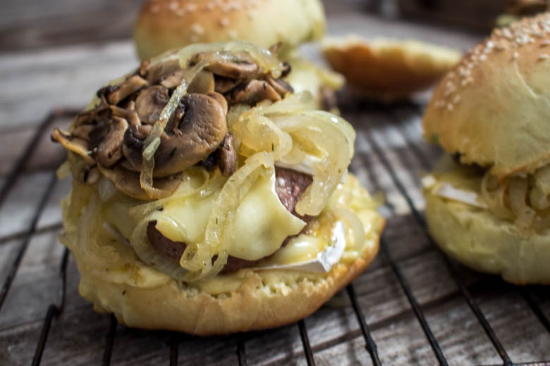
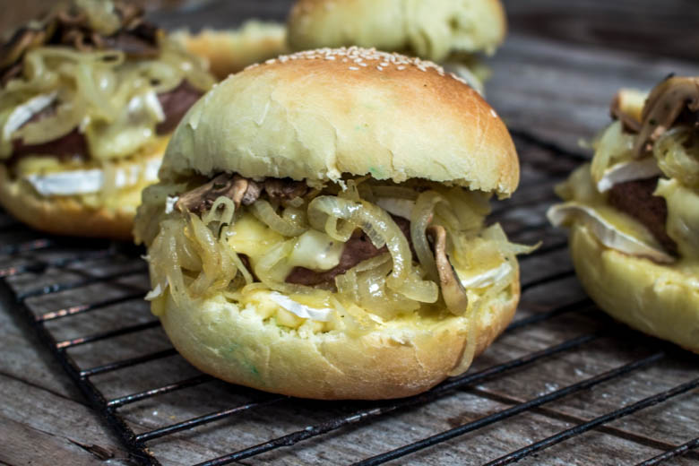

Burger champignon & bun maison

Je vous présente aujourd’hui le champi burger. Vous y trouverez des champignons de paris, des oignons caramélisés, du fromage coulant, un steak et un bon aïoli fait maison!
Ce champi burger ou burger champignon a vu le jour très récemment. Mon chéri m’a demandé si je pouvais lui faire des hamburgers maison, je lui ai répondu « bien sûr », ce qu’il ne savait pas c’est que je n’avais qu’une idée en tête à ce moment là: cuisiner des champignons (mouhahah il n’aime pas ça). J’ai donc décidé de faire des hamburgers mais aux champignons de paris et de là est né le burger champignon.
Cette recette nous a vraiment beaucoup beaucoup plu ! Même mon chéri qui déteste les champignons (ou détestait devrais-je dire) m’en redemande, ce burger a même détrôné son préféré à la raclette (recette ici). Il faut dire que toutes ces saveurs se marient parfaitement bien.
Bon je l’avoue ce burger est vraiment très gros et même moi qui en mange habituellement au moins deux j’ai su m’en contenter d’un seul!
Pour changer de ma recette habituelle de pain à hamburger, j’ai décidé de faire la recette du livre New York de Marc Grossman. J’ai donc fait mes burgers façon pain à hot dog. Le pain était bien moelleux et légèrement brioché, je pense que j’en referai mais je préfère tout de même ma recette habituelle (ici).
Bien entendu je vous donne cette recette de buns pour les courageux qui veulent faire du homemade sinon courez vite au supermarché le plus proche 😉
Je pense que vous salivez déjà assez comme ça. Je passe donc à la recette!
Ingrédients
- Farine - 680g
- Levure boulangère - 2càc
- Sucre en poudre - 4càs
- Sel - 2càc
- Beurre - 50g
- Eau - 14cl
- Lait - 18cl
- Jaune d'oeuf - 4
- Steack hachés - 4
- Oignons - 2 gros
- Champignons de paris frais - 250g
- Caprice des dieux - 300g (un paquet)
- Sucre - 4càs
- Thym
- Jaune d'oeuf (facultatif) - 1
- Ail - 4 gousses
- Huile d'olive
- Sel
Instructions
- Mélanger tous les ingrédients secs ensemble
- Faire chauffer dans une casserole l'eau et le beurre jusqu'à ce que le beurre fonde entièrement
- Hors du feu ajouter le lait
- Mélanger les ingrédients secs avec le mélange tiède beurre-eau-lait dans le bol de votre robot
- Pétrir tout en ajoutant les jaunes d’œufs un à un, pendant une bonne dizaine de minutes au robot (20min à la main pour les courageux)
- Quand la pâte est bien élastique former une boule bien lisse
- Huiler un récipient et y mettre votre boule puis couvrir à l'aide d'un film alimentaire
- Laisser reposer pendant 1h30 à température ambiante, la pâte doit doubler de volume
- Reprendre votre boule et la découper en parts égales (j'en avais fait 6)
- Faire 6 boules et les placer sur votre plaque de cuisson recouverte de papier sulfurisé
- Couvrir d'un torchon et laisser à nouveau reposer pendant 1h
- Préchauffer le four à 220°
- Badigeonner les boules d'un peu de lait et saupoudrer de graines de sésame ou de pavot
- Enfourner alors pour 10 minutes tout en surveillant bien jusqu'à que le dessus des buns soit bien doré
- Laisser refroidir pour ensuite les couper plus facilement
- Peler les gousses d'ail
- Presser les gousses d'ail au presse ail ou écrasez les dans un mortier à l'aide d'un pilon
- Ajouter le jaune d'œuf
- Saler
- Verser petit à petit l'huile d'olive en filet tout en remuant(toujours dans le même sens) avec un pilon ou une fourchette
- Continuer ainsi jusqu'à obtenir une sauce bien lisse (comme une mayonnaise)
- Ajouter du sel si nécessaire
- Réserver au frais.
- Couper les oignons en fines lamelles
- Dans une poêle à feu doux, faire fondre les oignons dans l'huile d'olive
- Ajouter quatre cuillères à soupe de sucre
- Une fois les oignons légèrement caramélisés, les sortir du feu et réserver
- Émincer les champignons de paris en fines lamelles
- Faire revenir les champignons dans un filet d'huile d'olive avec un peu de thym et réserver
- Commencer à cuire vos steaks hachés
- Pendant ce temps, couper le caprice des dieux en tranches ni trop fines ni trop épaisses
- Préchauffer votre four à 180°
- Couper vos buns en deux
- Tartiner chaque face aïoli
- Déposer sur la base du caprice des dieux
- Recouvrir le fromage d'une fine couche d'oignons caramélisés
- Déposer votre steak sur les oignons
- Remettre une tranche de fromage (je forme une sorte d'étoile avec 4 tranches de fromage sur le steak) ainsi qu'une autre couche d'oignons
- Déposer les champignons de paris
- Refermer le burger avec le chapeau et enfourner 5 petites minutes le temps que le fromage fonde un peu partout.

